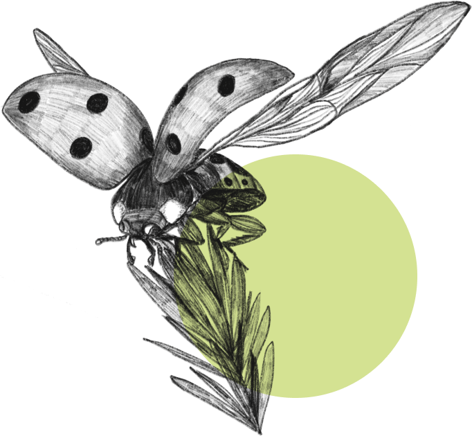

[Hippodamia convergens]
Ladybugs are general predators that feed on a variety of slow-moving insects, but they are best known for feeding on aphids. During the adult and larval stages it is a predator. Adults are shiny, hemispherical beetles, often reddish-orange or yellow, with black markings. Larvae are black, with conspicuous legs and orange spots on their backs. They move from plant to plant on leaves. Larvae pupate on the upper leaf surfaces, plant stems and twigs. Eggs are yellowish-orange ovals, laid on end in clusters of 10 to 50.
